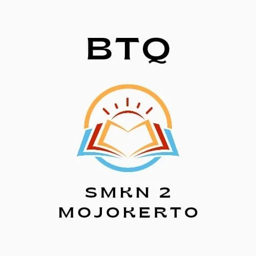
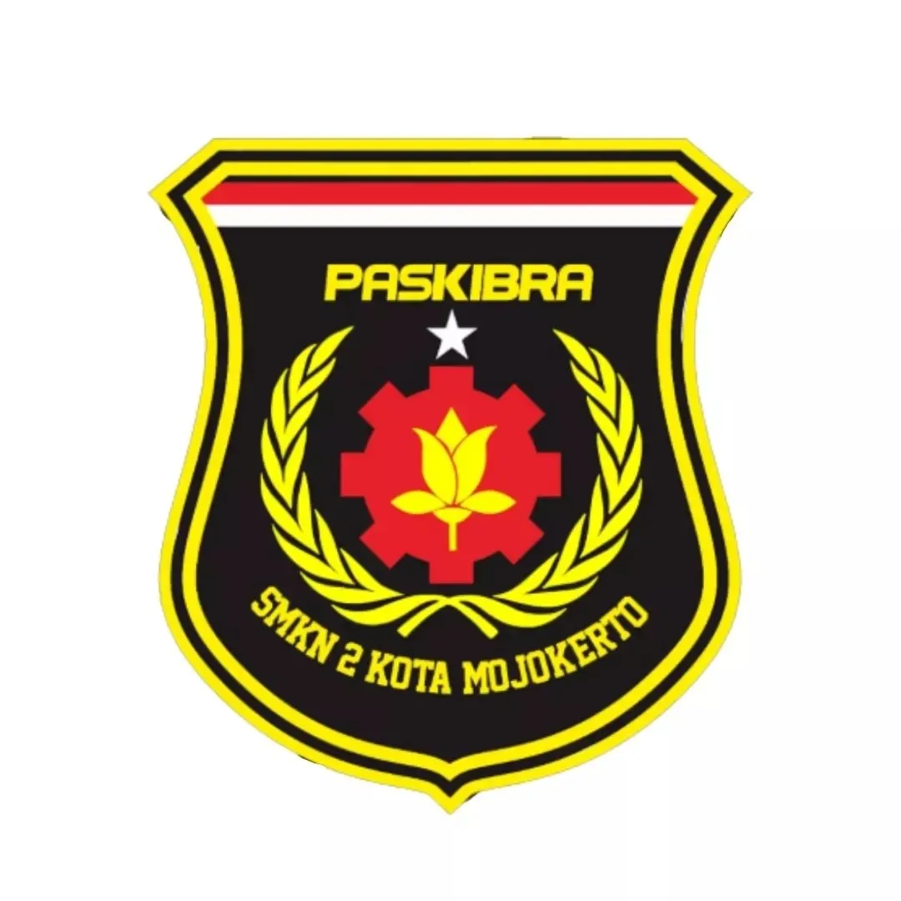
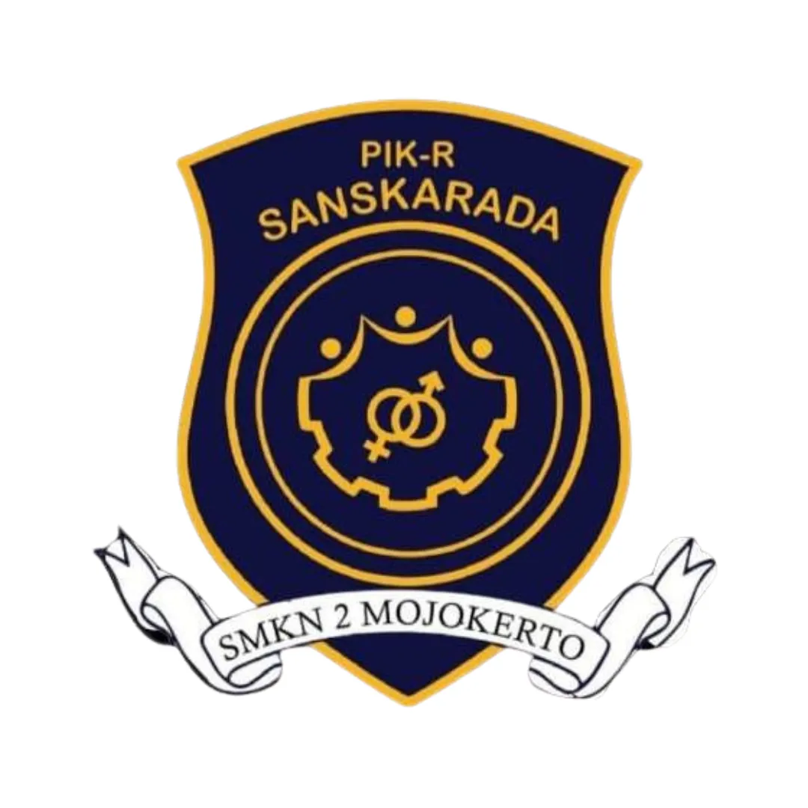
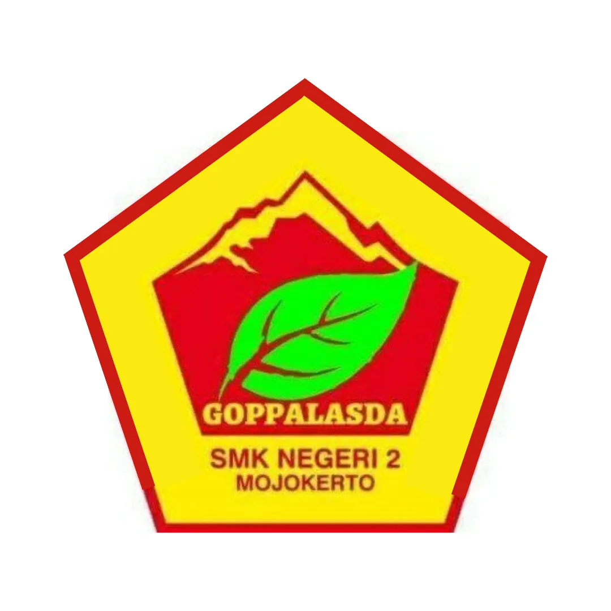

Ekstrakurikuler
Futsal
Pramuka

BTQ

Paskibra
PMI

Jurnalistik

PIK-R
Basket
English Club

Dalam upaya peningkatan mutu sumber daya manusia Indonesia, Departemen Pendidikan Nasional yang tertuang dalam rencana strategis (Renstra) Depdiknas menekankan bahwa perspektif pembangunan pendidikan tidak hanya mengembangkan aspek intelektual saja melainkan juga watak, moral, sosial, dan fisik peserta didik.
Kegiatan ekstrakurikuler merupakan kegiatan yang dilaksanakan di luar jam pelajaran tetap guna memperluas wawasan serta peningkatan dan penerapan nilai-nilai pengetahuan dan kemampuan dalam berbagai hal, seperti olahraga dan seni.
Pasal 3 Undang-Undang Nomor 20 Tahun 2003 tentang Sistem Pendidikan Nasional menyebutkan bahwa pendidikan nasional bertujuan berkembangnya potensi peserta didik agar menjadi manusia yang beriman dan bertakwa kepada Tuhan Yang Maha Esa, berakhlak mulia, sehat, berilmu, cakap, kreatif, mandiri, dan menjadi warga negara yang demokratis serta bertanggung jawab.
Melalui partisipasinya dalam kegiatan ekstrakurikuler, peserta didik dapat belajar dan mengembangkan kemampuan sesuai minat dan bakatnya sehingga dapat mencapai hasil yang maksimal.